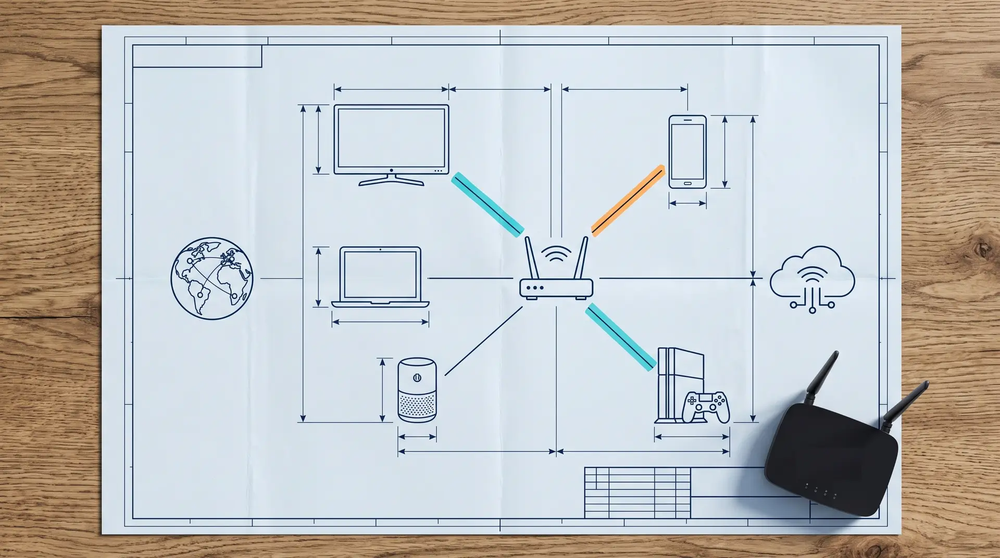

Detour
Обход блокировок — на роутере, для всей сети
sing-box и zapret под одной панелью: профили, маршруты по сайтам, цепочки и WARP.
платформы
OpenWrt / GL.iNet · Keenetic
лицензия
MIT · открытый код
DETOUR.VARYEN.NET